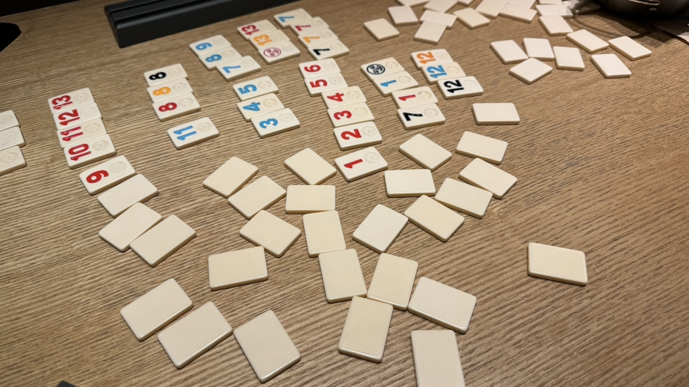

실내
실내에서 눈길이 간 것들
친구의 모자
친구의 모자에 적혀있는 문구가 재밌고 흥미로웠다. 하루 종일 이 친구와 함께 수업을 들은 날이었다. 모든 수업이 다 끝나고 강의실을 나가려던 참에 갑자기 친구 모자에 문구가 눈에 띄었다. ‘ARTIST or DIE’, 번역하면 ‘예술가이거나 죽거나’라는 뜻이다. 우리 둘 다 예술 대학에 다니는 학생인데 이 극단적인 문구가 너무 황당해서 보자마자 웃음이 나왔다. 그래서 이 모자를 디자인한 사람과 의도가 궁금해졌다.
카페 안 고양이
이 고양이는 학교 앞 카페 안에서 본 고양이이다. 이 카페에 고양이가 있다는 사실을 전혀 모르고 들어갔다. 근데 카페 소파 위에 이 고양이가 있어서 나의 눈을 사로잡았다. 고양이를 키워본 적은 없지만 인터넷이나 SNS에서 고양이 사진을 보는 것을 좋아한다. 그래서 밖에서 고양이를 마주치면 반가운 마음에 다가가 보거나 사진도 찍어본다. 카페에서 이 고양이를 마주하고 기분이 좋아졌다.
포스트잇
친구의 노트북에 붙어있는 어도비 단축키 메모이다. 학교에 들어와 어도비 프로그램을 처음 접해봐서 모든 게 다 익숙하지 않아 어렵게 느껴졌다. 그래서 가끔 실습을 하다가 단축키를 잊어버려서 인터넷에 들어가서 검색해 본 적이 있다. 노트북 메모장 앱에 메모를 해놨지만 창을 열고 닫으며 봐야 해서 보기가 불편했다. 그런데 이렇게 메모해서 붙여놓으면 더 보기가 편하겠다는 걸 느꼈다. 그래서 나도 자주 쓰는 단축키들을 메모해서 붙여놓아야겠다 생각했다.
로또 번호
스크래치로 로또 번호를 생성하는 프로그래밍을 연습했다. 이 고양이 캐릭터가 랜덤으로 로또 번호를 생성해 준다. 생성해 준 이 번호가 흥미롭게 느껴졌다. 왜냐하면 나는 일확천금의 꿈을 가끔씩 상상해 본다. 그래서 예전에 결과는 미 당첨이었지만, 재미 삼아 로또를 구매해 본 경험이 있다. 그래서 저 캐릭터가 랜덤으로 불러주는 로또 번호가 나의 흥미를 돋게 했다.
디지털 카메라
집 청소 중에 발견한 디지털카메라 두 개이다. 2000년대 초반부터 2010년대 초반까지 흔히들 많이 사용했던 디지털카메라가 요즘 들어 다시 유행이 돌아왔다. 그런데 청소 중 서랍 구석에서 부모님께서 사용하시던 디지털카메라들을 발견했다. 이 카메라를 발견하고 어릴 때 이 카메라를 사용하시던 부모님의 모습이 순간적으로 떠올랐다. 그래서 어릴 때 추억의 물건을 발견한 기쁨을 느꼈다. 그리고 다시 돌아온 디지털카메라의 유행으로, 이 카메라로 사진을 찍어보고 싶은 마음이다.
루미큐브
금요일에 수업을 마치고 친구들과 보드게임 카페에 갔다. 많은 보드게임 중 루미큐브를 보고 반가웠다. 왜냐하면 중학교, 고등학교를 다니면서 친구들과 함께 루미큐브를 한 추억이 있다. 아니면 아이패드 게임 앱으로 혼자 많이 했던 기억도 있다. 그런데 여기서 엄청 오랜만에 루미큐브를 봤다. 여기서 이 게임을 하며 든 생각이 있다. 오랜만에 해서 그런지 머리 회전이 너무 안됐다. 그래서 요즘 들어 머리를 안 썼나 싶어 나 자신을 잠깐 돌아봤다.